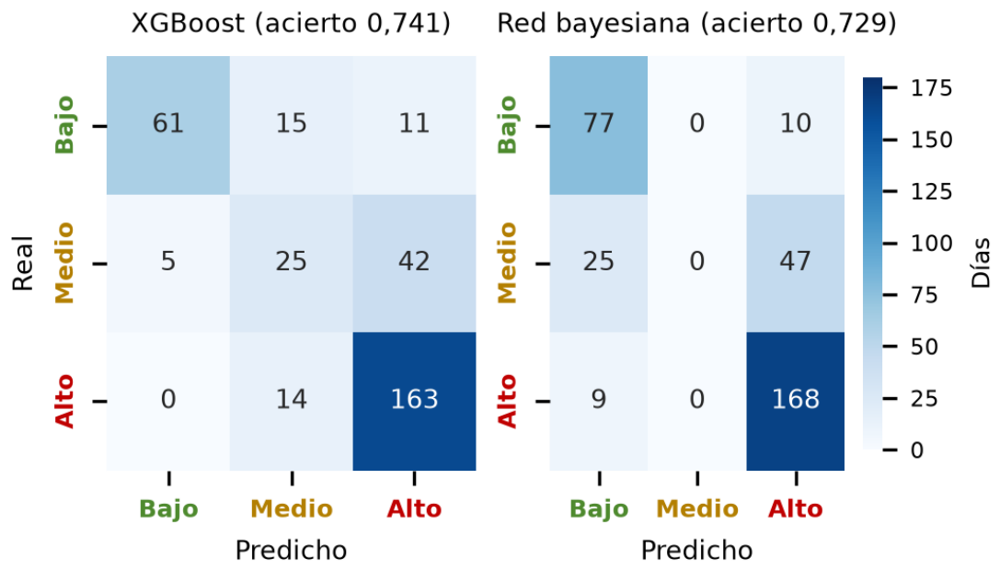

Industrial + Ciencia de Datos
Germán De Armas
Científico de datos. Modelado predictivo, diseño de la comparación de técnicas e integración del sistema.
Proyecto de grado · Ingeniería Industrial · UTB 2026
Este proyecto anticipa cuántas emergencias de gas llegarán mañana al centro de control de Surtigas en Montería, con un 34 % menos de error que los métodos actuales. Así las cuadrillas se programan antes de que entre la llamada, no después.
01 / El problema
Hoy la cuadrilla sale cuando el usuario ya llamó, y la capacidad se programa mirando hacia atrás.
Entre 2017 y 2026, el centro de control de Montería atendió 50 195 emergencias. El promedio diario subió de 12 a 20 entre 2017 y 2024, y cambia mucho de un día de la semana a otro. Programar con la demanda reciente deja días cortos de cuadrillas y otros con turnos que nadie usa: unas 3 878 horas al año mal dimensionadas.
Cumplir no es el problema: el 99 % de las emergencias no controladas se atiende en menos de una hora. El problema es lo que cuesta cumplir. En la operación simulada, las horas extra suman 51,86 millones de pesos al año y los traslados entre sectores otros 11,13 millones. Si la demanda sigue creciendo, ese margen se estrecha.
Demanda diaria de emergencias
Media móvil de 30 días, emergencias por día · 2 ene 2017 – 17 mar 2026
La media anual pasó de 12,1 emergencias por día en 2017 a 20,2 en 2024 y bajó a 18,5 en 2025; el máximo diario fue de 97, el 6 de junio de 2024.
02 / La pregunta
El registro de emergencias ya existía. Faltaba saber si servía para anticipar el día siguiente.
Pregunta principal
¿En qué medida un modelo predictivo entrenado con el registro de emergencias de Surtigas reduce el error del pronóstico diario y las horas de cuadrilla mal dimensionadas?
Para responderla, el proyecto se planteó cuatro preguntas más concretas:
La analítica en redes de gas se ha dedicado sobre todo a detectar fugas. Para anticipar cuántas emergencias llegarán al distribuidor no se encontró un estudio equivalente en una ciudad intermedia de Colombia.
03 / Método
Siete técnicas compitieron con las mismas reglas, y el examen final se presentó una sola vez.
Datos
De 50 198 órdenes a una serie diaria de 3362 días: se limpiaron fechas imposibles, se imputaron 880 tiempos negativos con un bosque aleatorio y se añadieron variables de calendario.
Diseño
Partición temporal sin fugas. Sobre validación, un factorial 4×5 con 3 réplicas (60 corridas) eligió técnica y ventana: ganó XGBoost con W = 40. La prueba se usó una sola vez.
Evaluación
Del 1 de enero al 17 de marzo de 2026, el trimestre más representativo del año de prueba. Recreado a partir de la figura del paper.
Demanda observadaXGBoostBiLSTMIntervalo 80 % (ZINB)
Cuatro técnicas de aprendizaje automático (XGBoost, LSTM, BiLSTM y una red convolucional) se midieron contra tres modelos estadísticos de conteo (Poisson, binomial negativa y su versión inflada en ceros). La ganadora salió de un diseño de experimentos sobre los datos de validación. El año de prueba quedó guardado hasta el final, sin que ningún modelo lo viera antes. Todo el proceso siguió CRISP-ML(Q), el estándar para proyectos de aprendizaje automático con control de calidad.
Señala un bloque para ver su recreación; tócalo para fijarla y abrir la figura con «Ver más».
04 / Resultados
Ganó XGBoost: el más preciso en validación y el más estable de todos.
En el año de prueba, XGBoost se equivocó en promedio 4,22 emergencias por día. El mejor método simple, repetir la demanda del mismo día de la semana anterior, se equivocó en 6,40. El modelo recorta ese error un 34 %. Superó con significancia estadística a los modelos de conteo y a todas las referencias, y empató con las redes neuronales, aunque con la mitad de su variación entre corridas.
El pronóstico viene acompañado. La ZINB calcula la probabilidad de que mañana sea un día de demanda alta, y una red bayesiana explica por qué: los festivos y los fines de semana concentran los días tranquilos. Para las emergencias no controladas, las urgentes, el tiempo de respuesta se pronostica con un error de 0,15 h, unos nueve minutos.
Error absoluto medio por técnica
Emergencias por día · barra más corta, mejor pronóstico
Aprendizaje automáticoModelos de conteoReferencias
XGBoost: 4,22 en prueba, un 34 % menos que la mejor referencia (6,40).
* XGBoost se eligió en validación; en prueba no difiere significativamente de las redes neuronales.

05 / Impacto
Menos error significa cuadrillas donde y cuando hacen falta. Eso se mide en horas y en pesos.
Con el pronóstico, las horas mal dimensionadas bajan un 38 %: unas 1 468 horas al año. Los días críticos, en los que la demanda supera al pronóstico en más de cinco emergencias, pasan de 94 a 61. Son los días en que una emergencia urgente corre el riesgo de esperar más de una hora.
La ganancia más grande está en dónde se ubican las cuadrillas. Repartirlas entre sectores según la probabilidad de cada uno reduce un 24 % las horas en déficit con la misma nómina. Con el reparto y el pronóstico juntos, la inversión de 37,89 millones de pesos se recupera en unos 22 meses y deja un VPN de 99,36 millones a cinco años.
¿Y una cuadrilla de reserva? Protege más el cumplimiento, pero no se paga sola. Solo conviene si Surtigas estima que la probabilidad anual de una multa máxima supera el 3 %.
Horas mal dimensionadas
06 / Equipo
Cuatro estudiantes de Ingeniería Industrial de la Universidad Tecnológica de Bolívar, entre ciencia de datos, finanzas y procesos.
Industrial + Ciencia de Datos
Científico de datos. Modelado predictivo, diseño de la comparación de técnicas e integración del sistema.
Industrial + Ciencia de Datos
Científico de datos. Ingeniería de datos, evaluación de modelos y comparación de técnicas.
Industrial + Finanzas
Evaluación financiera. Análisis costo-beneficio, VPN, TIR y escenario de asignación por sector.
Ingeniería Industrial
Ingeniería de procesos. Comprensión del negocio y de los datos, gestión de procesos de negocio y contexto normativo.
07 / Descarga
El documento trae todo el detalle: los datos, el protocolo, el tablero de control por rol y la evaluación financiera.